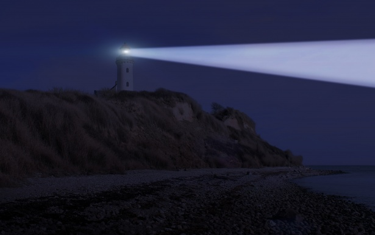

South Warren

South Warren
Status: Ongoing
Summary: South Warren is a Lovecraftian horror text adventure game based on a project I completed in programming class. In South Warren, you play as a private investigator who travels to a small harbor town to investigate the disapperance of 18 year old Percival Mowbry. During you investigation, you noticed that there's something lurking deep within the shadows and it's up to you to save the townsfolk from the unknown threat. There's going to be two versions of the game: the short version and the complete story. The complete story is going to be consists of 11 chapters and for the short story version it's based on the prologue of the game.
Nova
*MIGHT CHANGE NAME OF TITLE
Status: Ongoing